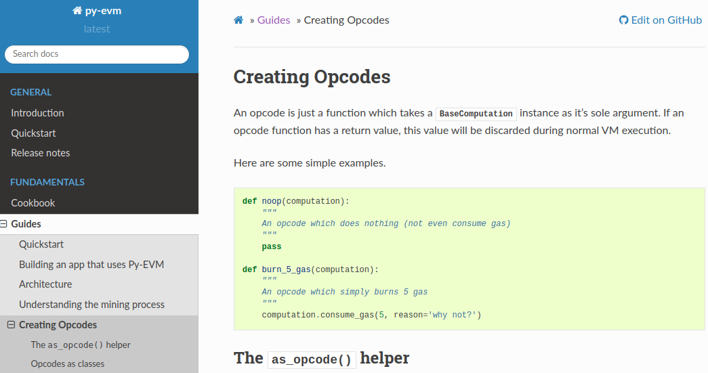

name: inverse layout: true class: center, middle, inverse --- # Report on event-level DP and DP applied to growing Databases .footnote[ This presentation: https://marc-queiroz.github.io/unifil/doctoral-project/slides/latest/index.html ] --- layout: false class: inverse, middle .left-column[ ## Previously ] .right-column[ - What will be protected using DP on Blockchain applied to Sharding? - Use case: Search for a Protocol (Ethereum 2.0 / Zilliqa / Harmony / Dang et al.) to implement a DP algorithm - For qualification: DP can be scaled in Blockchain? - What are the Pros and Cons of DP in the context of Sharding? ] --- layout: false class: inverse, middle .left-column[ ## 6 layers ] .right-column[ - Adding to data layer, the first of the 6 architecture based layers, a new type of data. - This data will be used to save data in Differential Privacy state. ] .footnote[ HASSAN, M. U.; REHMANI, M. H.; CHEN, J. Differential privacy in blockchain technology: A futuristic approach.Journal of Parallel and Distributed Computing] --- layout: false class: inverse, middle .left-column[ ## ML with Privacy ] .right-column[ Review of the Learning with Privacy at Scale, 2017, from Apple Machine Learning Research. - Collecting data using a local PD algorithm. - Using Event-Level DP. ] .footnote[ <div class="csl-entry">Apple Differential Privacy Team. (2017). <i>Learning with Privacy at Scale - Apple Machine Learning Research</i>. Apple Machine Learning Journal. https://machinelearning.apple.com/2017/08/02/inverse-text-normal.html</div> ] --- layout: false class: inverse, middle .left-column[ ## ML with Privacy ] .right-column[ - Used to estimate the frequency estimation of a dataset, example: web domains and emoticons. ] .footnote[ <div class="csl-entry">Apple Differential Privacy Team. (2017). <i>Learning with Privacy at Scale - Apple Machine Learning Research</i>. Apple Machine Learning Journal. https://machinelearning.apple.com/2017/08/02/inverse-text-normal.html</div> ] --- layout: false class: inverse, middle .left-column[ ## Continual Observation ] .right-column[ The Apple team used as base an article from Dwork, about continual observation of data. Most of the work done using DP target static databases, using DP algorithms to create safe statistics. ] .footnote[ <div class="csl-entry">Dwork, C., Naor, M., Pitassi, T., & Rothblum, G. N. (2010). Differential privacy under continual observation. <i>Proceedings of the Annual ACM Symposium on Theory of Computing</i>, <i>31</i>(6), 715–724. https://doi.org/10.1145/1806689.1806787</div> ] --- layout: false class: inverse, middle .left-column[ ## Event-level DP ] .right-column[ - Problem: Online databases can receive new data. How to protect? - Algoritms capable to maintain a differentilly private internal states and outputs, under continual observation are called pan-private. ] .footnote[ Hafid, A., Hafid, A. S., & Samih, M. (2020). Scaling Blockchains: A Comprehensive Survey. IEEE Access, 8, 125244–125262. https://doi.org/10.1109/ACCESS.2020.3007251 ] --- layout: false class: inverse, middle, top **Definition**: Let **Alg** be an algorithm. Let **I** denote the set of internal states of the algorithm, and σ the set of possible output sequences. Then algorithm **Alg** mapping data stream prefixes to the range **I** x σ is user-level pan-private (against a single intrusion) if for all sets **I'** ⊆ **I** and σ' ⊆ σ, and for all pairs of X-adjacent data stream prefixes S, S' where the probability is over the coin flips of **Alg**. <div style="font-family: Arial;font-size: 14px;">Dwork, C., Naor, M., Pitassi, T., & Rothblum, G. N. (2010). Differential privacy under continual observation. <i>Proceedings of the Annual ACM Symposium on Theory of Computing</i>, <i>31</i>(6), 715–724. https://doi.org/10.1145/1806689.1806787</div> --- layout: false class: inverse, middle .left-column[ ## Growing databases ] .right-column[ #####The large majority of differentially private algorithms focus on the static setting, where queries are made on an unchanging database. This is unsuitable for applications involving databases that grow over time. To address this gap in the literature, we consider the dynamic setting, in which new data arrive over time. ] .footnote[ Cummings, Rachel et al. “Differential Privacy for Growing Databases.” ArXiv abs/1803.06416 (2018) ] --- layout: false class: inverse, middle .left-column[ ## Implementation ] .right-column[ How to add local DP to Sharding archicteture? If using Virtual Machine based systems like Ethereum, could be possible to add a new opcode. ] --- layout: false class: inverse, middle, top  <div style="font-family: Arial;font-size: 14px;">Py-EVM Docs https://py-evm.readthedocs.io/en/latest</div> --- layout: false class: inverse, middle .left-column[ ## ... ] .right-column[ - Privacy on data layer. Blockchain with privacy included. - Resist to attack for growing databases. Using continual observation and event-level algorithms. - Data types: (Key, Value) dictionary like or statitics counters. ] --- layout: false class: inverse, middle .left-column[ ## ... ] .right-column[ - Develop a use case, like traffic conditions, search trends or databases for self-assessment sites (H1N1, Covid-19, etc). Stream like data. ] --- layout: false class: inverse, middle .left-column[ Concerns ] .right-column[ Given a statistical or DP dataset, how to continually add data, without disclosing private data and maintain the data utility? ] --- layout: false class:inverse,center,middle # Thank you